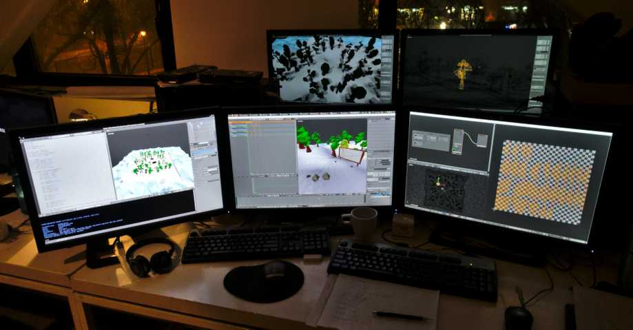
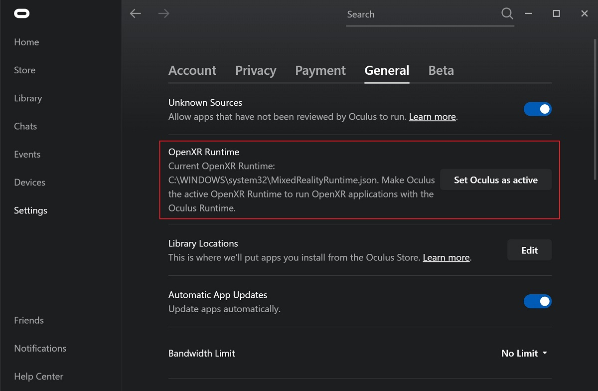
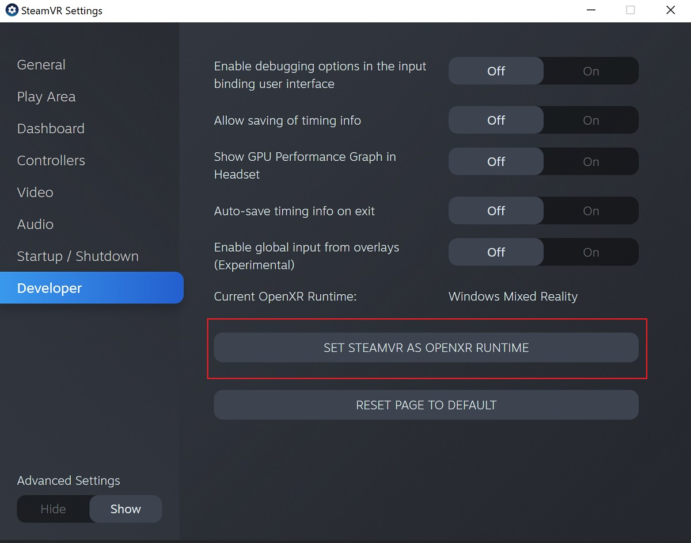
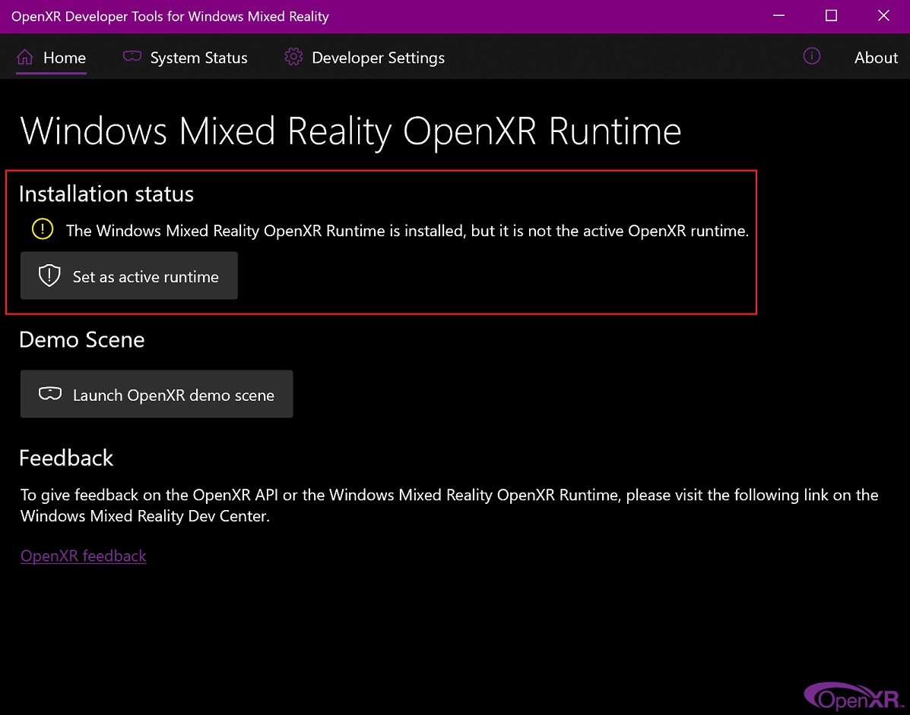

Cấu hình Thiết bị Ngoại vi¶
Màn hình¶
Nên dùng màn hình Full HD (1920x1080) trở lên. Có hỗ trợ thiết lập đa màn hình, và các workspace có thể được cấu hình trải rộng trên nhiều màn hình.

Ví dụ về hỗ trợ đa màn hình của Blender.¶
Thiết bị Nhập liệu¶
Blender hỗ trợ nhiều loại thiết bị nhập liệu:
Bàn phím (khuyến nghị: bàn phím có cụm phím số, bố cục tiếng Anh cho trải nghiệm tốt nhất)
Chuột (khuyến nghị: chuột ba nút có bánh xe cuộn)
Bảng vẽ (Graphic Tablet)
Touchpad
Thiết bị NDOF (còn gọi là 3D Mouse)
Ghi chú
Nếu bạn không có nút chuột giữa hoặc cụm phím số, bạn có thể mô phỏng chúng trong Tùy chỉnh nhập liệu. Tuy nhiên, lưu ý rằng việc mô phỏng này có thể khiến mất một số phím tắt. Nếu có thể, nên sử dụng phần cứng được khuyến nghị.
Mouse¶
Một số thao tác trong Blender sử dụng nút chuột giữa (nhấn vào bánh xe cuộn) hoặc sử dụng bánh xe cuộn. Đó là lý do khuyến nghị dùng chuột hai nút kèm bánh xe cuộn đóng vai trò nút giữa (về bản chất là chuột 3 nút). Điều này cho phép quy trình làm việc hiệu quả nhất trong mọi module của Blender.
Keyboard¶
Một số thao tác trong Blender sử dụng cụm phím số (numpad) của bàn phím. Đây là bộ 10 phím số cộng các phím hàm toán học nằm ở bên phải của một bàn phím full-size 104 phím truyền thống. Điều này cho phép quy trình làm việc hiệu quả nhất trong mọi module của Blender.

Mô phỏng Phím số (Numpad)¶
Nếu bàn phím của bạn không có cụm phím số ở bên, bạn có thể muốn mô phỏng một cụm. Khi đó bạn có thể dùng hàng phím số phía trên cùng của bàn phím để thay thế, nhưng sẽ không còn truy cập được chức năng gốc của các phím này (chẳng hạn như chuyển giữa lựa chọn vertex/edge/face trong Edit Mode).
Xem thêm
Đọc thêm về Mô phỏng phím số trong Tùy chỉnh.
Bàn phím Không phải tiếng Anh¶
Nếu bạn dùng bàn phím có bố cục không phải tiếng Anh, bạn vẫn có thể được lợi khi chuyển sang bố cục UK hoặc US trong lúc làm việc với Blender.
Ghi chú
Bạn cũng có thể đổi keymap từ Tùy chỉnh. Tuy nhiên, tài liệu này giả định rằng bạn đang dùng keymap mặc định.
Màn hình Cảm ứng¶
Blender có một số cài đặt có thể bật để cải thiện trải nghiệm trên các thiết bị hỗ trợ cảm ứng. Các tùy chọn này giúp quản lý các vùng (area), menu và thao tác dễ dàng hơn mà không phụ thuộc vào thao tác chuột chính xác.
Bật Show Handles để đơn giản hóa việc đổi kích thước và sắp xếp lại Area.
Tăng Border Width để các cạnh vùng dễ được chọn bằng ngón tay hơn.
Bảng vẽ (Graphic Tablet)¶
Bảng vẽ có thể được dùng để cung cấp phương pháp điều khiển con trỏ chuột theo cách truyền thống hơn bằng bút vẽ. Điều này giúp mang lại trải nghiệm quen thuộc hơn cho những nghệ sĩ đã quen vẽ và tô màu với các công cụ tương tự, cũng như cung cấp các điều khiển bổ sung như độ nhạy áp lực.
Ghi chú
Nếu bạn dùng bảng vẽ thay cho chuột mà độ nhạy áp lực không hoạt động đúng, hãy thử đặt con trỏ chuột vào cửa sổ Blender rồi ngắt kết nối/kết nối lại bảng vẽ. Cách này có thể giúp ích.
Touchpad¶
Điều khiển bằng touchpad có sẵn trên Windows, macOS và Linux với Wayland. Nếu bạn làm việc trên laptop không có chuột, bạn có thể mô phỏng các điều khiển bằng cử chỉ đa điểm trên trackpad từ Tùy chỉnh.
Cử chỉ |
Tác dụng |
|---|---|
Pan |
Giữ phím Shift trong khi kéo hai ngón tay trên trackpad. |
Zoom |
Giữ phím Ctrl hoặc OSKey trong khi kéo hai ngón tay trên trackpad. |
Quay quanh (Orbit) |
Kéo hai ngón tay trên trackpad. |
Mô phỏng nhấp chuột phải |
Gõ hai ngón tay trên trackpad. |
NDOF (3D Mouse)¶
Chuột 3D hay thiết bị NDOF là phần cứng mà bạn có thể dùng để điều hướng một scene trong Blender. Hiện tại chỉ các thiết bị do 3Dconnexion sản xuất, chẳng hạn như SpaceMouse™, mới được hỗ trợ. Các thiết bị này cho phép bạn khám phá scene, và giúp Điều hướng Fly/Walk dễ điều khiển hơn. Thiết bị NDOF có thể được cấu hình trong Tùy chỉnh. Các cài đặt này cũng có thể được truy cập trực tiếp từ viewport bằng nút NDOFMenu trên thiết bị NDOF.
Xem thêm
Xem Tùy chỉnh nhập liệu để biết thêm thông tin về việc cấu hình thiết bị ngoại vi.
Màn hình Đeo đầu (Thực tế Ảo)¶
HMDs giúp đưa người dùng vào một môi trường ảo tương tác. Được gắn trên đầu, chúng theo dõi chuyển động của đầu để chiếu một thế giới dường như bao quanh lên các màn hình nhỏ trước mắt người dùng. Nếu hệ thống hoạt động tốt, họ sẽ cảm nhận môi trường ảo như thể thực sự đang ở bên trong nó.
Các Nền tảng Được Hỗ Trợ¶
Hỗ trợ thực tế ảo trong Blender được triển khai thông qua chuẩn đa nền tảng OpenXR. Chuẩn này còn mới nên mức độ hỗ trợ cho nó vẫn còn hạn chế.
Nền tảng |
Hệ điều hành |
Ghi chú |
|---|---|---|
Windows |
||
Windows |
||
GNU/Linux |
Vẫn chưa được khuyến nghị cho sử dụng thông thường. |
|
Meta (trước đây là Oculus) (Rift và Quest) |
Windows |
Yêu cầu bản cập nhật phần mềm Oculus v31. Yêu cầu Oculus Link đối với Quest. |
Windows, GNU/Linux |
Yêu cầu SteamVR 1.16 trở lên. |
|
Windows |
-- |
|
Windows |
Yêu cầu Windows 10 May 2019 Update (1903). |
Bắt đầu¶
Các phần nhỏ sau đây mô tả cách thiết lập HMD để sử dụng với các nền tảng được hỗ trợ. Nếu không làm điều này, Blender sẽ báo lỗi khi cố khởi động một phiên thực tế ảo.
HTC Vive Cosmos¶
Nền tảng riêng dành cho HTC Vive Cosmos hiện hướng đến các nhà phát triển và có thể thiếu một số tính năng có ở các nền tảng khác.
Làm theo các bước từ Diễn đàn nhà phát triển Vive.
Bật add-on VR Scene Inspection trong Blender.
HTC Vive Focus 3¶
Nền tảng riêng dành cho HTC Vive Focus 3 hiện hướng đến các nhà phát triển và có thể thiếu một số tính năng có ở các nền tảng khác.
Làm theo các bước từ Diễn đàn nhà phát triển Vive.
Bật add-on VR Scene Inspection trong Blender.
Monado¶
Monado là một nền tảng XR miễn phí và mã nguồn mở cho Linux. Nó chưa sẵn sàng cho sử dụng trong sản xuất thực tế và chỉ nên dùng cho mục đích thử nghiệm.
Có gói cài đặt cho các bản phân phối sau:
Ubuntu (Eoan, Focal)
Đối với các hệ thống khác, phải biên dịch từ mã nguồn, và trong trường hợp này không khuyến nghị cho người ít kinh nghiệm biên dịch phần mềm. Dù vậy, hãy làm theo Hướng dẫn Bắt đầu từ Monado để thực hiện.
Bật add-on VR Scene Inspection trong Blender.
Meta (trước đây là Oculus)¶
Meta (trước đây là Oculus) cung cấp hỗ trợ đầy đủ cho OpenXR kể từ bản cập nhật phần mềm Oculus v31.
Tải xuống và cài đặt phần mềm Oculus Rift/Oculus Link.
Đặt Oculus làm OpenXR runtime đang hoạt động qua tab General trong Oculus App Settings.


Bật add-on VR Scene Inspection trong Blender.
Hỗ trợ Passthrough
Hiện tại, hỗ trợ passthrough qua OpenXR bị tắt theo mặc định trong ứng dụng Quest Link, và phải được bật thủ công trong cài đặt của nó để dùng tính năng này.
Hiệu năng của bản render passthrough thay đổi theo chất lượng kết nối giữa tai nghe và máy tính. Để có kết quả tốt hơn, nên kết nối tai nghe trực tiếp với PC qua USB, hoặc ít nhất kết nối máy tính vào mạng cục bộ qua Ethernet.
SteamVR¶
SteamVR cung cấp hỗ trợ đầy đủ cho OpenXR kể từ SteamVR 1.16.
Đặt SteamVR làm OpenXR runtime đang hoạt động qua tab Developer trong SteamVR Settings.


Bật add-on VR Scene Inspection trong Blender.
Ghi chú
SteamVR runtime cũng có thể được dùng cho các HMD HTC Vive Cosmos, Oculus và Windows Mixed Reality.
Varjo¶
Varjo bao gồm hỗ trợ OpenXR đầy đủ cùng phần mềm Varjo Base bắt buộc đi kèm.
Bật add-on VR Scene Inspection trong Blender.
Windows Mixed Reality¶
Windows Mixed Reality cung cấp hỗ trợ đầy đủ cho OpenXR. Để kiểm tra xem một chiếc PC có đáp ứng yêu cầu chạy phần mềm hay không, Microsoft cung cấp ứng dụng Windows Mixed Reality PC Check.
Hãy chắc chắn rằng Windows 10 May 2019 Update (1903) đã được cài đặt.
Nếu hệ thống đáp ứng mọi yêu cầu, Mixed Reality Portal hẳn đã được cài sẵn. Nó cũng có sẵn trên Microsoft Store.
Khởi động Mixed Reality Portal. Nhấp vào nút menu
...ở góc dưới bên trái. Trong menu hiện ra, chọn Set up OpenXR.Bật add-on VR Scene Inspection trong Blender.
Ghi chú
Để chuyển sang Windows Mixed Reality từ một OpenXR runtime khác (vd: SteamVR), hãy tải OpenXR Developer Tools từ Microsoft Store và đặt Windows Mixed Reality làm runtime đang hoạt động.

